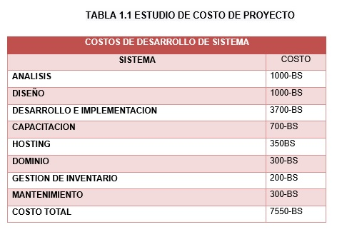

Capitulo 1
INTRODUCCION
En el vertiginoso mundo actual, la tecnología ha orquestado una transformación asombrosa en el ámbito del comercio. El auge del comercio en línea ha supuesto una auténtica revolución en la forma en que las empresas se conectan con sus clientes y gestionan sus operaciones. En este emocionante escenario, les presentamos nuestro innovador proyecto: 'La Plataforma E-COMERCE Desarrollada con Flutter'.
PLANTEAMIENTO DEL PROBLEMA
En la actualidad, el mundo del comercio ha experimentado una revolución sin precedentes gracias a la omnipresencia de la tecnología. El auge del comercio electrónico ha cambiado drásticamente la forma en que las empresas llegan a sus clientes y gestionan sus operaciones. En este escenario de evolución constante, surge nuestro emocionante proyecto: "PLATAFORMA E-COMMERCE DESARROLLADO CON FLUTTER". Esta iniciativa representa un hito en la intersección entre la innovación tecnológica y el mundo empresarial.
FORMULACION DEL PROBLEMA
¿Cómo enfrenta la 'Plataforma E-COMERCE Desarrollada con Flutter’ los desafíos en el ámbito del comercio electrónico, tales como la complejidad tecnológica, la satisfacción del usuario, la integración de pagos y logística, ¿la competencia global y la necesidad de actualizaciones tecnológicas constantes?
DELIMITACION
| ESPACIAL | TEMPORAL |
El estudio se llevará a cabo en la ciudad de El Alto-La Paz, en Bolivia, en el Instituto Tecnológico “Puerto de Mejillones”. El cual se encuentra ubicada Plan 482, Av. Arturo Ballivián, altura Av. Del Policía, N° 1831, Ciudad Satélite. |
Desde el mes de marzo inicia con la propuesta de perfil y con la finalización hasta septiembre la implementación del sistema considerando cada una de las actividades propuestas dentro del proyecto |
|---|
OBJETIVOS
| GENERAL | ESPECIFICOS |
Transformar y poner en marcha una 'Plataforma E-COMERCE Desarrollada con Flutter' que revolucione de manera eficaz los desafíos tecnológicos y comerciales del comercio electrónico. Proporcionará a las empresas una herramienta altamente personalizable, fácil de utilizar y tecnológicamente avanzada, mejorando la gestión de inventario, perfeccionando la experiencia del usuario y expandiendo su alcance global, al tiempo que facilitará actualizaciones tecnológicas continuas. |
|
|---|
JUSTIFICACION
| Tecnica | Social | Economica |
• Requisitos de Hardware Moderados: La aplicación desarrollada con Flutter está diseñada para funcionar de manera eficiente en dispositivos móviles con requisitos de hardware moderados. Esto significa que no se requiere un hardware de alto rendimiento para ejecutar la aplicación, lo que amplía la accesibilidad a un público más amplio. • Requisitos Mínimos de Almacenamiento: La plataforma se diseñará para ocupar un espacio de almacenamiento razonable en los dispositivos móviles de los usuarios. Esto es especialmente importante para dispositivos con capacidades de almacenamiento limitadas. |
Beneficiarios
|
"PLATAFORMA E-COMMERCE DESARROLLADO CON FLUTTER" radica en su capacidad para impulsar la eficiencia operativa, aumentar las ventas en línea y reducir costos asociados a la gestión de inventario y ventas. La inversión en esta plataforma se traduce en un retorno de la inversión significativo a través de un aumento en los ingresos y una optimización de procesos, lo que la convierte en una decisión económica sólida y rentable para las empresas que buscan expandir y mejorar su presencia en el comercio electrónico.  |
|---|
METODOLOGIA
Enfoque en la Eficiencia del Flujo de Trabajo
El KANBAN está arraigado en una búsqueda incansable de perfección en la velocidad y eficiencia con la que se entregan productos y servicios. La reducción de tiempos de espera y la eliminación de posibles obstáculos en el proceso son prioridades fundamentales.
Mejora Continua
El KANBAN se apoya en la filosofía de la mejora constante. Los equipos no solo ejecutan tareas, sino que también tienen la responsabilidad de revisar y ajustar continuamente el proceso. Este enfoque impulsa una mayor eficiencia y, en última instancia, una mayor satisfacción del cliente.